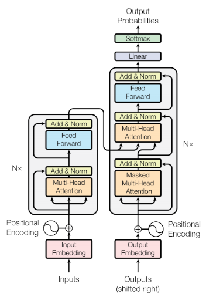
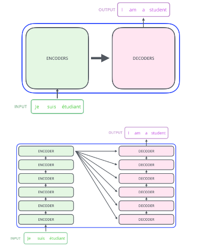

Transformers
A transformer has a traditional encoder-decoder structure, with connections between them.
The encoding component is a stack of encoders. Similarly, the decoding component is a stack of decoders.


The encoder is organized as a self-Attention (AI)
layer (query, key and value are shared), followed by feedfoward component (a couple of dense layers). The decoder is similar, with an additional Attention (AI)
layer that helps the decoder to focus on relevant parts of the input sentence. Using multiple heads for attention expands the model’s ability
to focus on different positions, for different purposes. As a result, multiple “representation subspaces” are created, focusing on potentially different aspects of the input sequence.